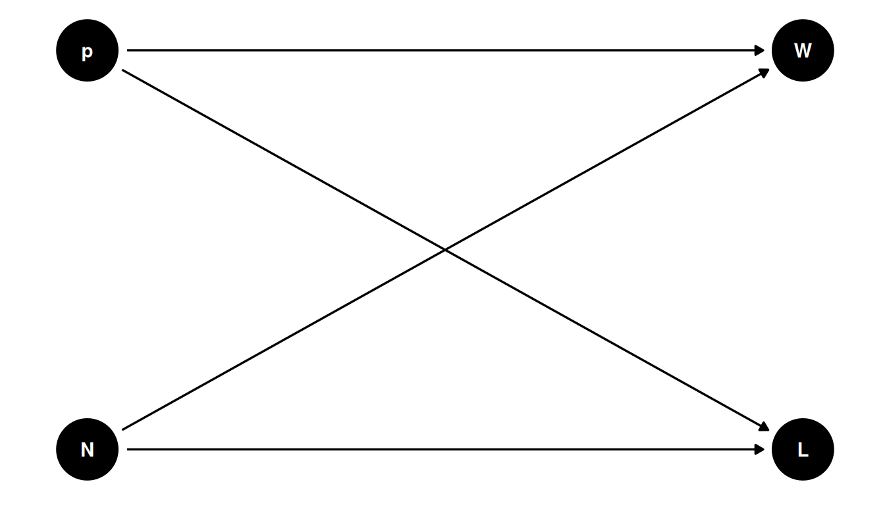
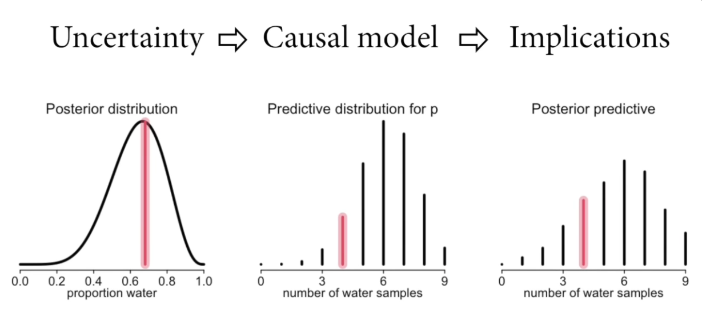
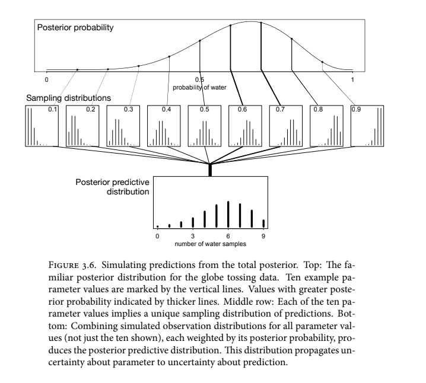
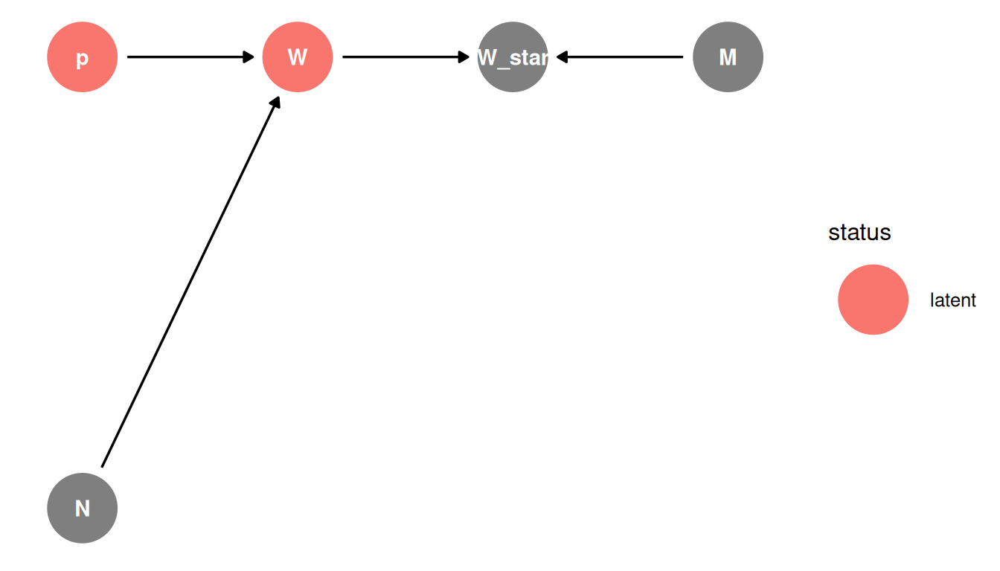

Lecture 02 Notes
Bayesian data analysis
Bayesian data analysis is Bayesian inference applied to scientific data analysis. For each possible explanation of the sample, count all the ways the sample could have happened and explanations with more ways to produce the sample are more plausible.
No guarantees except logical. Probability theory is a method of logically deducing the implications of data under the assumptions that you must choose.
Note that the sample that arises is a product of both natural processes and the choices of the scientists collecting the data (biases, limitations of measurement devices, sampling extent, etc.).
Workflow
- Define generative model of the sample
- Define a specific estimand
- Design a statistical way to produce estimand
- Test the statistical method using the generative model
- Analyse the sample, summarize
Globe tossing model
Estimand: proportion of globe covered in water
Given N samples, how should we use the sample? Produce a summary of the sample? Represent uncertainty?
First, think about how sample is produced and how variables influence on another.
- p = proportion of water
- W = land observations
- W = water observations
- N = number of tosses
Note
Variables can be data (things you observe) or things you want to estimate.
When drawing a DAG, consider variables in terms of influences and the consequences of interventions. If you intervene on N, it will influence W and L indirectly.
N influences W and L: if you were to intervene on N (eg. increase the number of observations), it would change W and L.
To make the DAG generative, we need to define these relationships as a function.
\(W, L = f (P, N)\)
What is the function?
| Possible globes | W L W |
|---|---|
| 4 L | 0 x 4 x 0 = 0 |
| 3 L 1 W | 1 x 3 x 1 = 3 |
| 2 L 2 W | 2 x 2 x 2 = 16 |
| 1 L 3 W | 3 x 1 x 3 = 27 |
| 4 W | 4 x 0 x 4 = 0 |
Given the table and our scientific understanding, the function is:
\(W, L = (4p) ^ {W} * (4-4p) ^ {L}\)
Generative simulation
Simulate a data set with known parameters, then test if your statistical estimator returns these known parameters.
Repeat with different sampling designs, with extreme simulations (eg. all W or all L).
Bayesian inference
- There is no minimum sample size
- The sample size is embodies in the shape of the posterior distribution
- There are no point estimate. The posterior distribution is the estimate (always use the entire distribution).
- There is no one true interval. Nothing happens at the boundary. Intervals are summary tools that communicate the shape of the posterior.
Posterior predictive simulations
Posterior prediction is a prediction based on the posterior estimate. Given the knowledge so far (the posterior distribution) what would we predict about future samples?
Samples from the entire posterior distribution allow us to determine the implications of the model.

In the globe tossing case, the estimate of our model is the distribution of the proportion of water. We can take samples from this distribution (OR in the eventual case of using MCMC, we’ll just start with samples of the posterior distribution) which represent a vector of proportions of water. With this vector of samples, we can predict what the eg. next 9 globe tosses would be, incorporating the uncertainty of the posterior distribution.
Applications of sampling:
- model-based forecasts
- causal effects
- counterfactuals
- prior predictions
Misclassification
Consider the true number of water samples is unobserved, eg. due to measurement error. W* (W_star) is misclassified sample, influenced by the measurement process (M).
Note
This DAG is simplified to remove L since N - L = W

Next, use a simulation to determine the potential impact of misclassification.
Define a function with a new variable X, the misclassification rate, that takes a simulated sample then introduces error. The misclassification estimator returns a new formula for the posterior distribution.
If there is measurement error, better to model it than to ignore it. Samples do not need to be representative of the population in order to provide good estimates of the population. The priority is to determine in which ways (why) the sample differs from the population. Then you can model the sample process and the causal differences for the population.